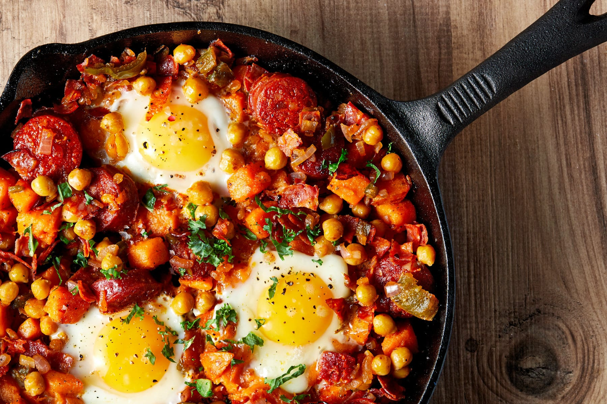

Sweet Potato Hash

This healthy sweet potato hash recipe is the perfect muscle-building breakfast.
Ingredients
- 500g sweet potatoes
- 1 tbsp. Coconut Oil
- ½ red onion (finely chopped)
- 200g tinned chickpeas (drained)
- 150g chorizo or pancetta (chopped into 1cm cubes)
- ½ tsp. sea salt
- ½ tsp. black pepper
- 4 medium free-range eggs
- Handful pickled and sliced jalapeños
Directions
- Peel the sweet potatoes and chop into 2cm cubes.
Put the cubes into a pan and cover with water,
then bring to the boil. Once boiling, drain and
allow the steam to run off for 2-3 minutes.
- While waiting, add the coconut oil to a pan on
a medium to high heat. Once melted, add the
chopped onions and chorizo/pancetta, and fry for
3-4 minutes, stirring occasionally.
- Next, turn the heat down to medium and add the
sweet potatoes, chickpeas, jalapenos, sea salt
and black pepper. Squash them down a little
and fry for 8-10 minutes without moving them,
until the bottom becomes crispy.
- Once crispy, make 4 small wells in the hash and
break in the eggs. Cover the pan with a lid and
cook for 2-3 minutes until the eggs are cooked
but the yolk is still runny (you can cook for
longer if you like your yolks well-done).
- Top with a few extra jalapeños and serve.
Original recipe found on MyProtein